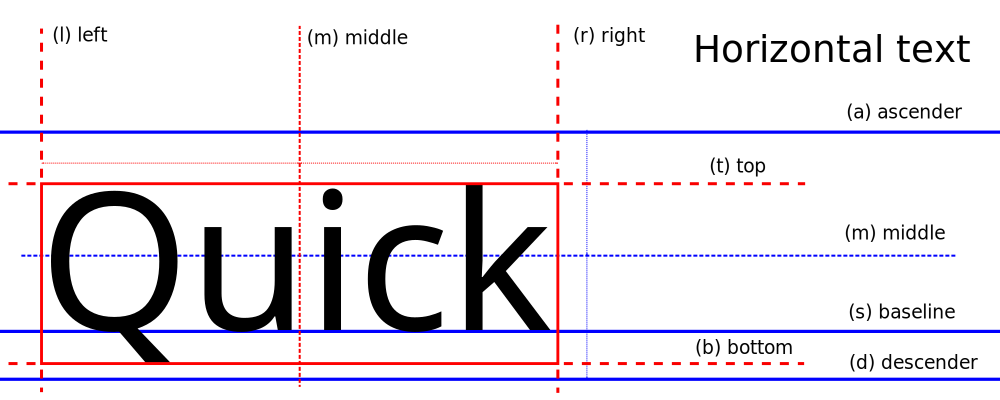

Requisitos de Usuário
- RU001 - O programa fornecerá um meio para o usuário colocar todos os 'paths' necessários para a criação das imagens
- RU002 - O programa fornecerá uma prévia do resultado final, onde o usuário poderá colocar textos e visualizá-los conforme ficarão na versão final
- RU003 - O programa dará uma série de inputs onde o usuário poderá fazer 'ajustes finos' acerca do onde e como o texto deverá aparecer de acordo com sua área na imagem
- RU004 - O programa permitirá ao usuário salvar informações configuradas por ele, como os 'paths' ou os 'ajustes finos'
Requisitos Funcionais de Sistema
Referente ao RU001
- RF001 - Deve haver 1 campo para cada 'path' exigido, cada campo é composto por um aviso, um rótulo, um campo de input e um botão que permita buscar o path de cada item
- RF002 - O item de aviso deve ser um alerta visual, que indicará quando o 'path' do campo input é ou não válido, caso haja mais de um possível erro, o item deve dar dicas de como o erro pode ser resolvido
- RF003 - É necessário que o programa valide os campos de input e verifique se cada campo é válido pra seu respectivo item, caso seja válido, o programa deve atualizar o item de aviso, alertando o usuário que o valor é válido, o mesmo deve ocorrer para o caso de valor inválido
- RF004 (opcional) - Os campos de input poderão ser preenchidos de forma intuitiva, permitindo ao usuário navegar pelo explorador de arquivos do sistema e selecionar os arquivos e pastas diretamente, retornando o path do item selecionado
Referente ao RU002
- RF005 - A prévia deverá conter uma imagem-modelo isolada semelhante à imagem final, porém sem influência sobre a mesma, a prévia exibirá de forma precisa como os textos ficarão na imagem final
- RF006 - Para cada campo presente na imagem, haverá um campo correspondente no programa que permitirá input de texto-modelo a ser exibido na prévia, esse campo deve ser acompanhado de um identificador e um contador que permita saber a quantidade de caracteres do campo de forma dinâmica
Referente ao RU003
- RF007 - Cada área de texto da imagem deve possuir uma área respectiva que permita fazer ajustes, como as coordenadas em que o texto deve aparecer na imagem e o tamanho de sua fonte, em caso de áreas com múltiplas linhas, também deve ser coletado o número máximo de caracteres para cada linha e o espaçamento entre as linhas
- RF008 - Deve haver um preenchimento automático e/ou desabilitação de campos cujo valor possa ser deduzido
Referente ao RU004
- RF009 - O programa deverá armazenar configurações e outros dados em arquivos de texto simples, essas informações devem ser legíveis no arquivo
- RF010 - Ao executar, o programa buscará por configurações salvas previamente e, se houver, preencherá os campos com seus respectivos valores salvos, caso não encontre, os campos ficarão em branco
Funcionamento do Programa
Área de Paths

- Área onde devem ser colocados os 'paths' para cada arquivo correspondente com o rótulo, esses campos podem ser preenchidos manualmente;
- Área de alertas, cada alerta pode ter 2 cores diferentes, verde ou vermelho, verde representará que o arquivo ou pasta foi encontrado e funcionará, vermelho representará que houve um erro ao tentar encontrar o arquivo, no total existem 4 mensagens diferentes para cada item:
- "Não identificado": Aparece quando o campo está vazio;
- "Esperava algo como": Aparece quando foi identificado texto no campo de preenchimento, porém ele não corresponde à um caminho válido;
- "Deve ser": Aparece quando um caminho válido é inserido, porém o arquivo ao qual ele leva não é o que se espera para esse campo;
- "Encontrado!": A única a aparecer com o aviso na cor verde, ela informa que o caminho é válido e o arquivo tem o tipo esperado.
- Área de botões de busca, ao clicar, cada um deles abrirá o explorador de arquivos e permitirá a busca do arquivo ou pasta desejado, ao terminar a seleção o caminho para o arquivo ou pasta será automaticamente colocado no campo de input, caso a busca pelo arquivo seja cancelada após clicar no botão, o campo de input ficará em branco;
- Área de botões, o botão de "Salvar Paths" irá coletar cada caminho de arquivo colocado e salvará tudo num arquivo de texto chamado "paths", localizado em src/data/. O botão "Apagar Tudo", deixará todos os campos de input em branco.
Área de Preview

- Área de pré-visualização, a imagem inicial, que é aberta com o programa, é a imagem com nome "preview" localizada em src/images, sempre que forem executadas as configurações de preview, a imagem será atualizada com as novas informações e também com a imagem que foi colocada como imagem base na área dos paths;
- Área de textos demonstrativos, aqui podem ser colocados textos de qualquer tipo para serem visualizados na imagem, os textos ocuparão a sua área correspondente na imagem, a área do texto é identificada pelo rótulo localizado antes do campo de input, cada campo de input conta com um contador, identificado por "T: 0", o "T" representa "tamanho de texto", esse contador é atualizado a cada caractere colocado no espaço correspondente.
Área de Ajustes e Botões

- A área de ajustes finos, possui um total de 11 sub-áreas, cada uma afeta o seu respectivo campo na imagem, algumas sub-áreas possuem mais campos a serem preenchidos que outras, devido as necessidades que cada área da imagem exige, no total são 7 campos diferentes que podem aparecer, sendo eles:
- Coordx: Determina, horizontalmente, o pixel em que o texto será colocado na imagem, sendo o ponto inicial (0) o lado esquerdo da imagem;
- Coordy: Determina, verticalmente, o pixel em que o texto será colocado na imagem, sendo o ponto inicial (0) o topo da imagem;
- Min: Determina o mínimo de caracteres pra ocupar o espaço definido;
- Max: Determina o máximo de caracteres que pode ocupar o espaço definido;
- Font-Size: Determina o tamanho da fonte;
- Font-Size1 e 2: Determina o tamanho do texto quando ele pode ter no máximo 2 linhas, o font-size1 determina o tamanho do texto enquanto ele estiver dentro do intervalo definido, font-size2 determina o tamanho do texto quando ele excede o intervalo;
- Spacing: Determina o espaçamento de linhas em textos com mais de 1 linha.
- Área de botões, é ocupada pelos botões principais do programa, sendo eles:
- O botão "Salvar Configurações" irá pegar todos os valores definidos na área de ajustes e salvá-los num arquivo de texto chamado "configs" localizado em src/data;
- O botão "Demonstração" irá atualizar a imagem de pré-visualização usando os novos dados de texto-demonstrativo e de ajustes que foram colocados;
- O botão "Executar", irá usar as informações de ajustes e aplicará as configurações desejadas na imagem base escolhida, a quantidade de imagens que será gerada, dependerá da quantidade de informação disponível no arquivo de texto selecionado, as imagens geradas irão para a pasta de destino pré-selecionada.
Especificações
Texto

- Títulos e Datas de Estréia possuem as âncoras (x, y) como meio-meio, isso quer dizer que as coordenadas irão determinar onde será o meio do texto na imagem.
- Todos os Demais Textos: possuem âncoras (x, y) meio-ascendente, isso quer dizer que a coordenada x irá determinar onde ficará centralizado o texto e a coordenada y determinará onde será o topo do texto.